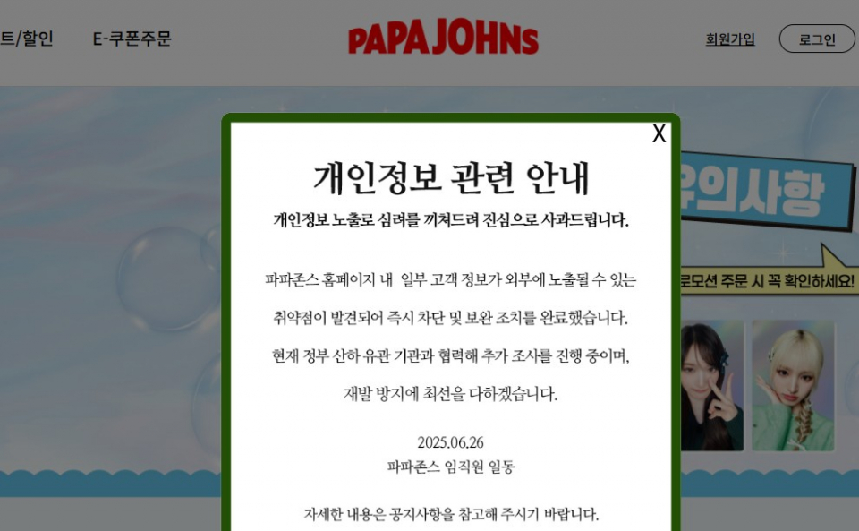
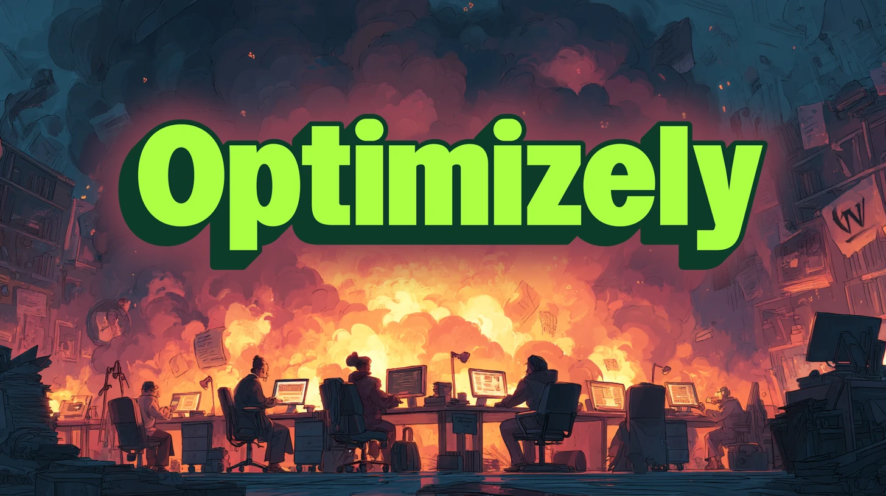
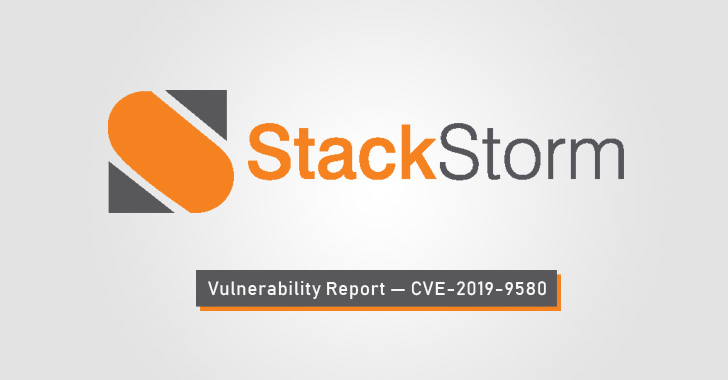
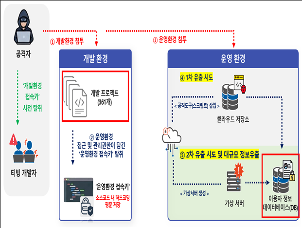

2026학년도 2학기 실전웹서비스개발
실전 웹서비스개발 – 10주차
AI 시대의 웹 서비스 보안
LECTURE 10
01
웹 서비스 보안의 현실과 패러다임 전환
방치된 웹사이트와 공격 표면
국내 50만 개 웹 서비스의 관리 부재와 최초 침투 경로
- 공격 표면 - 외부에 노출되어 공격자가 접근할 수 있는 모든 경로
- 관리 주체와 보안 업데이트가 끊긴 웹사이트 약 50만 개 방치
- 공식 자산 목록에서 누락된 Shadow IT가 최초 침투 경로로 악용
| 방치 자산 유형 | 발생 배경 | 보안 위험 |
|---|---|---|
| 테스트·임시 서버 | 개발 종료 후 미회수 | 초기 계정 · 디버그 정보 노출 |
| 방치된 서브도메인 | 행사·과제 종료 후 방치 | 미패치 프레임워크 · 구형 API |
| 관리·연동 도구 | 자산 전수조사 누락 | 외부 직접 접속 및 내부 진입 |
AI 기반 공격 자동화와 상시 위협
취약점 탐색 비용 감소로 모든 공개 엔드포인트가 무차별 공격 대상
- 공격 자동화 - AI와 봇이 취약점 탐색과 침투를 자동 수행하는 환경
- 생성형 AI 보편화로 정찰 · 취약점 분석 · 공격 코드 생성 비용 급감
- 주요 기업뿐 아니라 소규모 웹 프로젝트까지 인터넷 전체 상시 스캔 대상
-
자동 정찰
공개 도메인 · API 경로 상시 수집
-
취약점 판별
AI 기반 설정 오류 · 알려진 결함 식별
-
무차별 시도
자동 생성 페이로드로 즉각 침투 시도
보안 장비의 한계와 코드 취약점
외부 방화벽이 대신 막아주지 못하는 애플리케이션 구현 결함
- 형식적 보안 - 인증 획득과 외부 장비 도입에만 의존하는 운영 방식
- 방화벽 · 백신 · 망분리 설치만으로 웹 애플리케이션 내부 결함 차단 불가
- 정상 HTTP 요청 경로를 통해 전달되는 인증 우회 · 권한 결함이 주요 침투 원인
| 영역 | 방어 대상 | 보안 한계 |
|---|---|---|
| 네트워크 방화벽 · WAF | 비정상 포트 차단 · 알려진 패턴 탐지 | 요청자 권한 검증 누락 판별 불가 |
| 애플리케이션 코드 | 신원 확인 · 객체 소유권 검사 · 입력 처리 | 설계 결함 시 정상 경로를 통한 정보 유출 |
설계 단계의 보안과 개발자의 책임
기능 구현과 동시에 내재화하는 인증·인가와 비밀정보 보호
- 설계 단계 보안 - 기능 완성 후 보완하지 않고 초기 설계부터 보안을 내재화하는 원칙
- 보안은 별도 팀의 사후 점검이 아닌 웹 서비스 개발자의 핵심 설계 책무
- 클라이언트 화면 제어와 별개로 서버 측 인증 · 인가 · 입력 처리 · 키 격리를 기본 구조로 설계
-
인증과 상태
신원 확인과 세션·토큰 유지
-
서버 인가 검증
요청마다 역할·소유권 검증
-
입력·출력 분리
명령·코드 해석 경로 차단
-
비밀정보 격리
키 노출 방지와 환경 분리
02
주요 웹 취약점과 방어 원리
객체 수준 인가 결함과 접근 통제
요청 파라미터 변조로 타인의 자원에 접근하는 취약점 방어
- 객체 수준 인가 결함 (BOLA/IDOR) - 로그인 여부와 무관하게 대상 자원의 소유권을 누락하는 결함
- 확정 사례: 한국파파존스(2025 개보위 조사 · URL 주문번호 변조) · 호주 Optus(2022 · 미인증 API ID 순차 변조)
- 프록시 도구로 요청 ID 변조 가능 — UI 버튼 숨김이나 예측 불가 ID에 의존 금지

사례 보도 · 데일리시큐 (2025-06-27)
개인정보위, 한국파파존스 고객정보 유출 조사…파라미터 변조 취약점 ‘경고’ ↗주문 조회 URL 번호 변조만으로 비로그인 타인 주문·주소·카드정보 노출 확인
공격자 (프록시)
API 서버
DB
-
공격자 (프록시) → API 서버
GET /orders/1004 (본인)
-
공격자 (프록시) → API 서버
GET /orders/1005 (ID 변조)
-
API 서버
소유권 검증 누락 시 타인 노출
-
API 서버 → DB
요청자 === 소유자 검증 적용
-
API 서버 → 공격자 (프록시)
권한 불일치 → 403 Forbidden
입력 검증과 SQL 인젝션
사용자 입력이 데이터베이스 명령 구조로 해석되는 경로 차단
- 입력 검증 - 서버가 수신한 데이터의 형식·자료형·범위를 확인하는 1차 방어
- 클라이언트 입력 제한은 우회 가능하므로 서버 측 재검증 필수
- SQL 인젝션 - 입력 문자열이 SQL 구문에 섞여 명령 구조 자체를 바꾸는 공격
- 확정 사례: 여기어때(2017 민관합동조사단 · SQLi로 관리자 세션 탈취) · MOVEit(2023 CVE-2023-34362)
- 문자열 결합 대신 SQL 구조와 값을 분리하는 매개변수화 쿼리 적용
사례 보도 · SecurityWeek (2023-06-05)
Ransomware Group Used MOVEit Exploit to Steal Data From Dozens of Organizations ↗MOVEit Transfer SQL 인젝션(CVE-2023-34362) 악용으로 다수 기관 데이터 탈취
취약한 문자열 결합 vs 안전한 매개변수화 쿼리 (일반 예시)
// Vulnerable: user input changes query structure
const bad = `SELECT * FROM orders WHERE id = '${orderId}'`;
// Safe: structure fixed, input bound as parameter
const result = await client.query(
'SELECT id, status FROM orders WHERE id = $1 AND user_id = $2',
[orderId, req.userId]
);
$1·$2 매개변수는 값 전달 전용 — 테이블명·열명 치환 용도로 사용 불가
XSS와 스크립트 실행 통제
외부 입력과 제3자 스크립트가 브라우저에서 실행되는 위험 차단
- 브라우저 스크립트 위협 - 저장형 XSS와 제3자 스크립트 변조로 브라우저 코드 실행
- 확정 사례: TweetDeck XSS 웜(2014 · 트윗 입력 필터링 누락) · Optimizely(2026-11 · 프로젝트 JS 변조)
- 일반 텍스트는 출력 문맥 이스케이프 · HTML 허용 시 정제(Sanitize) 필수
- CSP(script-src · connect-src)와 스크립트 변경 감시로 실행·외부 전송 통제

사례 보도 · Help Net Security (2026-11-17)
Malware spread through Optimizely hits 178 organizations, including BBC, CNN and Zoom ↗고객 계정 사칭으로 프로젝트 JS에 악성 스크립트 삽입 · 178개 사이트 방문자 실행
입력 XSS와 외부 스크립트 공급망 경계를 구분해 통제
HTML 태그를 문자로 표시 저장형 XSS 실행 차단
허용 목록 정제(Sanitize) CSP · 무결성·변경 감시 적용
웹 출처 · 동일 출처 정책과 CORS
브라우저의 교차 출처 접근 경계와 허용 범위 오설정 방어
- 출처 (Origin)와 동일 출처 정책 (SOP) - 프로토콜·호스트·포트가 다르면 응답 읽기를 막는 원칙
- 요청의 서버 도달 여부와 브라우저 스크립트의 응답 읽기 가능 여부는 별개 판단
- CORS 오설정 - 임의 Origin 반사나 과도한 허용으로 민감 API 응답이 노출되는 결함
- 확정 사례: StackStorm(2019 CVE-2019-9580 · null Origin CORS 우회) · 미 국방부(DoD) HackerOne 리포트
- CORS는 브라우저 접근 규칙일 뿐 서버 API의 인증·인가를 대신하지 않음

사례 보도 · The Hacker News (2019-03)
Severe Flaw Disclosed In StackStorm DevOps Automation Software ↗CVE-2019-9580: null Origin 허용으로 CORS 보호 우회 및 교차 출처 API 요청 노출
브라우저 (app)
API 서버 (api)
-
브라우저 (app) → API 서버 (api)
Origin: https://app.example.com
-
API 서버 (api) → 브라우저 (app)
Access-Control-Allow-Origin: https://app.example.com
-
브라우저 (app)
허용 조건 확인 후 응답 읽기 허용
| 비교 대상 | 기준: https://app.example.com | 출처 판정 |
|---|---|---|
| 경로 변경 | https://app.example.com/list | 같음 |
| 호스트 변경 | https://api.example.com | 다름 (CORS) |
| 프로토콜 변경 | http://app.example.com | 다름 |
CSRF와 쿠키 보호 속성의 한계
자동 첨부되는 로그인 쿠키 악용과 서버 측 요청 의도 검증
- 크로스 사이트 요청 위조 (CSRF) - 다른 사이트가 로그인 브라우저로 의도치 않은 요청을 보내는 공격
- 확정 사례: Facebook CSRF 버그바운티(2019 · 계정 탈취 가능) · 옥션 관리자 세션 악용(2008)
- 상태 변경 요청에 요청 출처(Origin) 및 공격자가 알 수 없는 CSRF 토큰 검증
- 쿠키 보호 속성 - Secure · HttpOnly · SameSite의 방어 범위와 한계
- HttpOnly는 스크립트 쿠키 읽기를 막으나 XSS를 통한 요청 전송까지 막지는 못함
사례 보도 · SecurityWeek (2019-02-15)
CSRF Vulnerability in Facebook Earns Researcher $25,000 ↗엔드포인트 CSRF 검증 우회로 피해자 링크 열람 시 계정 설정 변경·탈취 가능
다른 사이트
로그인 브라우저
서버
-
다른 사이트 → 로그인 브라우저
의도와 다른 요청 유발
-
로그인 브라우저 → 서버
상태 변경 요청 + 쿠키 자동 첨부
-
서버
CSRF 토큰 · 출처 검증 실패 시 변경 거부
| 쿠키 속성 | 보호 범위 | 주의할 한계 |
|---|---|---|
| Secure | HTTPS에서만 전송 | 전송만 보호 |
| HttpOnly | JS 읽기 차단 | XSS 요청 허용 |
| SameSite=Lax | 교차 POST 제한 | 동일 사이트 허용 |
비밀정보 유출과 외부 경계 관리
개발자 키 탈취·하드코딩 및 외부 업체·백업 경로 침해 대응
- 비밀정보 유출 - 접속키 탈취와 소스코드 평문 하드코딩으로 서비스 전체가 노출되는 위험
- 확정 사례: 티빙(2026-09 과기정통부 발표 · 개발자 접속키 탈취 + 소스코드 운영키 43개 하드코딩)
- 확정 사례: PLAID KARTE(2026-11 공시 · 서버 취약점 통한 DB 연결 자격증명 탈취)

사례 보도 · 전자신문 (2026-09-03)
티빙 해킹, 접속키 하나에서 시작됐다…드러난 보안 허점 ↗개발환경 접속키 탈취 후 소스코드 하드코딩 운영키 43개 악용 · 3,954만 계정 유출
- 외부 경계 확장 - 위탁 업체와 백업 솔루션까지 포함된 공격 표면
- 확정 사례: JPMorgan·Visa·Mastercard 위탁사 침해(2026-11) · 더존비즈온 백업 침해(2026-10)
| 경계 영역 | 핵심 방어 조치 |
|---|---|
| 개발자 키 · 소스코드 | 하드코딩 금지 · 환경별 분리 · 단기 키 및 즉시 폐기 |
| 외부 위탁사 · SaaS | 제공 데이터 최소화 · 계약 종료 시 토큰 회수 |
| 백업 · 관리 도구 | 네트워크 격리 · 관리자 MFA · 암호화 키 분리 |
AI 시대의 경계: 간접 프롬프트 인젝션
외부 입력이 에이전트의 실행 지시로 승격되는 위험 통제
- 간접 프롬프트 인젝션 - 외부 이메일·문서·댓글의 숨은 지시가 AI 행동을 바꾸는 취약점
- 확정 사례: Microsoft 365 Copilot EchoLeak(2025 CVE-2025-32711 · 이메일 기반 제로클릭 유출)
- 연구 시연: Comment and Control(2026-04 · PR/이슈 통한 자격증명 노출) · Slack AI 주입 연구
사례 보도 · BleepingComputer (2025-06-11)
Zero-click AI data leak flaw uncovered in Microsoft 365 Copilot ↗외부 이메일 속 숨은 지시로 EchoLeak(CVE-2025-32711) 발생 · M365 내부 데이터 유출
-
비신뢰 입력 격리
외부 이메일 · 댓글 · 문서를 작업 지시와 명확히 분리
-
에이전트 최소 권한
읽기·승인·실행 권한 분리 모델 밖에서 정책·승인 검사
-
AI 출력·전송 통제
생성 HTML · SQL 직접 실행 금지 외부 URL 요청·도구 호출 제한
03
실전 적용: 푸드맵 인증·인가 및 보안 설계
현재 푸드맵의 보안 공백 진단
인증 없는 API와 브라우저 localStorage 의존 구조 점검
- 현재 구현 범위 (7~9주차) - React 클라이언트 · Express API · Supabase DB 구조
- 맛집 목록 조회는 동작하나 제보·좋아요가 localStorage에 남거나 비인증 요청 허용
- 누구나 가짜 제보를 대량 등록하거나 타인 데이터를 조작할 수 있는 무방비 상태
| 점검 항목 | 현재 상태 (적용 전) | 보안 적용 목표 |
|---|---|---|
| 맛집 제보 저장 | localStorage · 비인증 저장 | 로그인 사용자 식별 후 DB 저장 |
| 제보 승인 · 거절 | 역할 구분 · 관리자 검증 없음 | 서버 관리자 권한 검사 필수 |
| 통신 및 비밀키 | 로컬 환경 위주 연결 | 엄격한 CORS · 쿠키 · 키 분리 |
역할별 권한 매트릭스와 데이터 모델
비로그인·일반 사용자·관리자 정책과 사용자 스키마 확장
- 권한 명세 - 비로그인·일반 사용자·관리자별 API 허용과 거부 계약
- 화면에서 승인 버튼을 숨기는 것은 보안이 아니며 서버 응답(401·403)으로 강제
- 데이터 모델 확장 - 사용자 신원과 제보 소유권 연결
- users 테이블에 단방향 해시 비밀번호(bcrypt/argon2)와 role 저장 · submissions에 user_id 연결
| 요청 (API) | 비로그인 | 일반 사용자 | 관리자 |
|---|---|---|---|
| 맛집 목록 조회 | 허용 | 허용 | 허용 |
| 맛집 제보 등록 | 거부 (401) | 허용 | 허용 |
| 본인 제보 수정 | 거부 (401) | 본인만 허용 | 허용 |
| 제보 승인 · 거절 | 거부 (401) | 거부 (403) | 허용 |
인증 흐름과 교차 출처(CORS·쿠키) 설정
안전한 로그인·세션 전달과 Vercel–Render 간 출처 허용
- 로그인 파이프라인 - 해시 비교 검증 후 보호 속성이 적용된 세션 쿠키 발급
- HttpOnly · Secure · 적절한 SameSite 속성 적용 · 로그아웃 시 서버 저장소 무효화
- 로그인 비밀번호와 세션 식별자 원문은 서버 로그에 기록 금지
- 교차 출처 허용 설정 - 배포된 프론트엔드 주소(CLIENT_URL)만 API 읽기 허용
- Vercel(UI)과 Render(API) 출처가 다르므로 와일드카드(*) 대신 명시적 출처 지정
Express · 명시적 출처 CORS와 보호 쿠키 설정 예시
app.use(
cors({
origin: process.env.CLIENT_URL,
credentials: true
})
);
res.cookie('sid', sessionId, {
httpOnly: true,
secure: process.env.NODE_ENV === 'production',
sameSite: 'lax'
});서버 인가 및 입력·쿼리·출력 방어 구현
Express 미들웨어 권한 검사와 3대 취약점 코드 수준 방어
- 서버 인가 미들웨어 - 라우트 실행 전 인증(401)·역할(403)·소유권 확인
- isAuthenticated → requireAdmin 순서로 관리자 라우트 보호
- 코드 수준 3대 방어 - 입력 범위 검증 · 매개변수화 쿼리 · React 텍스트 출력
- 파싱된 name·latitude 검증으로 비정상 입력 차단 · $1 쿼리로 SQL 인젝션 방어
- 제보 설명을 JSX 문자열 자식으로 출력해 스크립트 실행(XSS) 차단
서버 JS · 입력 검증 및 매개변수화 쿼리
const nameOK = typeof name === 'string' && name.trim().length > 0;
const latOK =
Number.isFinite(latitude) && latitude >= -90 && latitude <= 90;
if (!nameOK || !latOK) {
return res.status(400).json({ error: 'Invalid input' });
}
await client.query(
'SELECT name FROM restaurants WHERE name = $1',
[searchTerm]
);
React JSX · 안전한 텍스트 출력
function ReportText({ report }) {
return <p>{report.description}</p>;
}비밀정보 격리 · AI 경계 · 보안 검증
환경변수 번들 분리와 가상 AI 요약·권한 우회 테스트 계획
- 환경변수 분리 - 브라우저 번들(VITE_*)과 서버 전용 키(SERVER_SECRET) 엄격 격리
- Supabase Service Role Key와 세션 비밀키는 Express 서버 환경에서만 로드
- 가상 AI 제보 요약 경계 - 외부 제보 텍스트와 관리자 승인 도구의 권한 분리
- 요약기는 읽기 전용으로 동작하며 제보 승인·삭제나 DB 직접 변경 권한 부여 금지
| 환경 설정 | 전달 경로 | 노출 범위 |
|---|---|---|
| SUPABASE_SERVICE_ROLE_KEY | 환경 → Express 프로세스 | 서버 전용 (절대 노출 금지) |
| VITE_API_BASE_URL | 환경 → 빌드 → 브라우저 번들 | 사용자 열람 가능 (공개 주소만) |
보안 수용 조건 검증 (하네스): 비로그인 제보(401) · 일반 사용자 승인(403) · 타인 수정(403) · 로그아웃 후 재요청 거부 확인